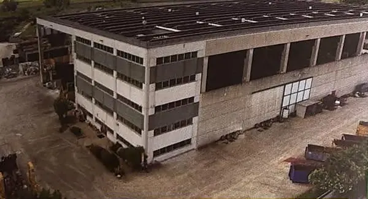
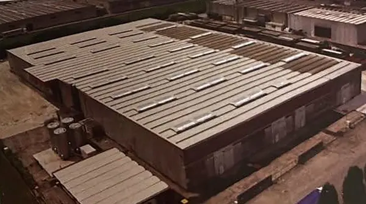
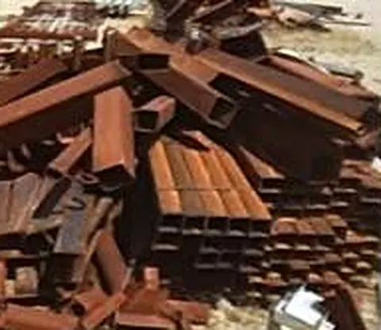
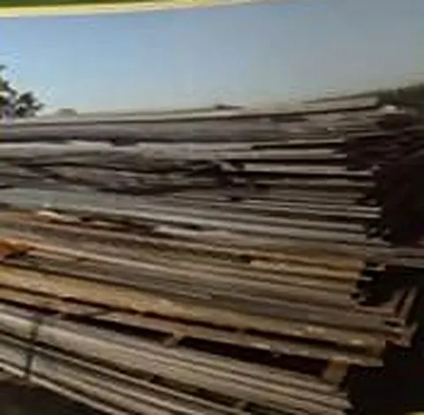
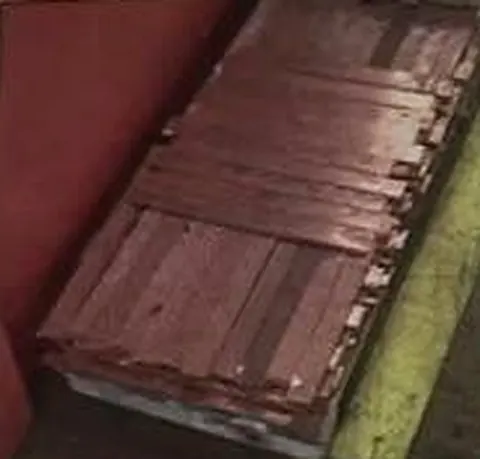
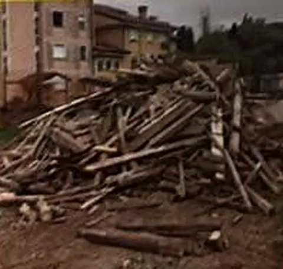
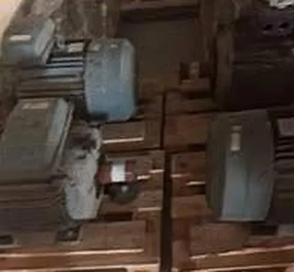
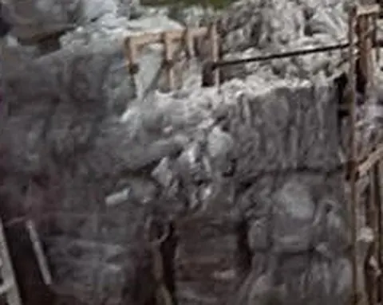

Professionalità
Consulenza diretta nella tua azienda: veniamo da voi, valutiamo la situazione e proponiamo la soluzione.
Ca.Metal srl e Cameco srl sono al servizio di enti pubblici e aziende private commerciali, industriali e artigianali: dal carico in cantiere al recupero dei materiali, fino allo smaltimento nel rispetto delle normative.
Mettiamo a disposizione di ogni cliente un'esperienza costruita in decenni di lavoro sul campo, con personale formato e impianti certificati.
Consulenza diretta nella tua azienda: veniamo da voi, valutiamo la situazione e proponiamo la soluzione.
Un'attività più che quarantennale nel recupero, nel riciclaggio e nel commercio dei materiali.
Personale specializzato e qualificato, mezzi autorizzati e procedure chiare in ogni fase.
Sistemi certificati ISO 9001 e ISO 14001, nel pieno rispetto delle normative ambientali.
Ca.Metal e Cameco lavorano insieme per offrire un servizio completo: raccolta, trasporto, selezione, recupero e commercio dei materiali.

Sedegliano (UD)Sede a Ronchis e stabilimento produttivo nella zona industriale di Sedegliano. Oltre quarant'anni di esperienza nel recupero, riciclaggio e commercio dei materiali, a livello europeo ed extraeuropeo.
Scopri Ca.Metal
San Vito al T. (PN)Sede a Latisana e stabilimento a San Vito al Tagliamento. Nata per rispondere alla crescente domanda di recupero e smaltimento di varie tipologie di rifiuti, nel rispetto delle normative ambientali.
Scopri CamecoCon una vasta esperienza e formazione, il nostro personale gestisce ogni fase del ciclo dei rifiuti per enti pubblici, industrie, commercio e artigianato.
Carico, trasporto, recupero e smaltimento di rifiuti solidi, liquidi, fangosi e polverulenti presso aziende e cantieri, con mezzi autorizzati.
Interventi di bonifica su aree, impianti e strutture, gestiti dal sopralluogo fino al corretto conferimento dei rifiuti.
Demolizioni e dismissioni industriali di capannoni, linee produttive e impianti, con recupero dei materiali.
Organizziamo il percorso del rifiuto verso l'impianto più adatto, curando documentazione e tracciabilità.
Consulenza diretta in azienda per classificare i rifiuti, ottimizzare la raccolta e rispettare gli obblighi di legge.
Commercio dei materiali recuperati, ferrosi e non ferrosi, a livello europeo ed extraeuropeo.
Metalli ferrosi e non ferrosi, carta, plastica, legno, vetro, isolanti, apparecchiature elettroniche, pneumatici, inerti e verde.



categorie di materiali gestite, dai metalli agli inerti, fino a liquidi, fanghi e apparecchiature elettroniche.



Il nostro personale si rende disponibile a visionare, valutare e risolvere le molteplici situazioni che interessano la vostra azienda. Chiamateci per un sopralluogo.